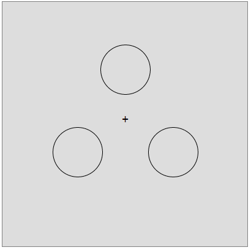
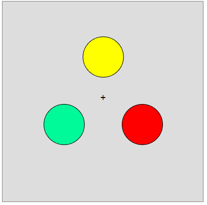
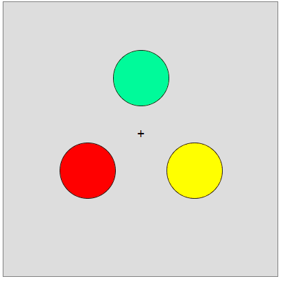
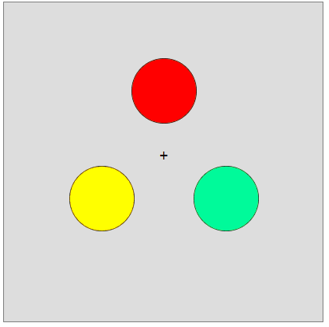
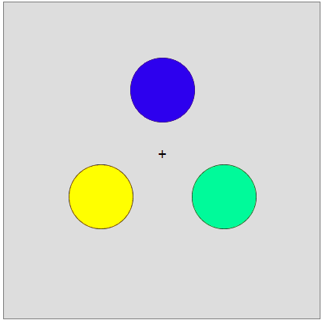
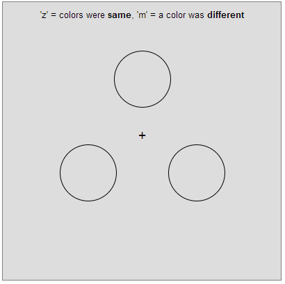

This HIT will take approximately 7 minutes. You will have to remember some colors. You'll perform 48 trials of
the same task; each trial lasts about 3 seconds.
On each trial, you'll see a display like this:

Then some colors will briefly appear inside each of the three circles:

And then the colors will go away:
Then the circles might move, or might stay where they were. Either way, after a couple of seconds, the
circles will then get filled in with colors again. Your job is to say whether they are the same
colors or whether any of the colors is now different.
Where the colors appear does not matter. So, all three of these displays count as the same
colors:
 
A display that is different will have exactly one color that is different than before, like this:

To respond, you'll use the 'z' and 'm' keys. If the colors are the same, you'll press 'z'. If they are
different, you'll press 'm'. This will be displayed for you on the screen so you don't have to remember it:

We are studying VISUAL memory. So it is very important that you do not say the names of the colors
to yourself or use words to perform the task. In fact, to be sure you don't do this, we suggest you repeat
the word 'the' over and over in your head when the colors are presented. This will help you to remember not
to use words to remember the colors.
Please do your best! Remember, please don't use words to remember the colors.
Consent to Participate in Research:
By answering the following questions, you are participating in a study being performed by cognitive
scientists in the Harvard University Psychology Department. The purpose of this research is to examine
human visual performance.
By participating you are confirming that you are over 18 years of age and have normal or
corrected-to-normal vision.
If you have questions about this research, or if you would like to receive a report of this research when
it is completed please contact Timothy Brady at tbrady@wjh.harvard.edu.
Your participation in this research is completely voluntary. If you choose to participate, you may change
your mind and leave the study at any time. Refusal to participate or stopping your participation will
involve no penalty or loss of benefits to which you are otherwise entitled.
You may decline to answer any or all of the following questions. Your anonymity is assured; the
researchers who have requested your participation will not receive any personal information about you.
For questions, concerns, or complaints that are not being addressed by the researcher, or
research-related harm contact: Committee on the Use of Human Subjects in Research at Harvard University,
1414 Massachusetts Avenue, Second Floor, Cambridge, MA 02138. Phone: 617-496-CUHS (2847). Email:
cuhs@fas.harvard.edu
By continuing, you are confirming that you understand these instructions and conditions of participation.